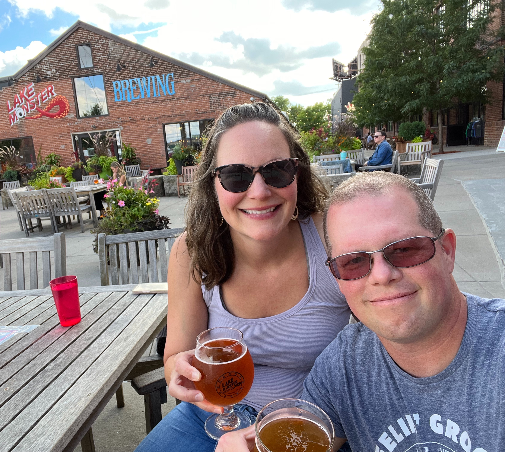

Major attractions in St. Paul

Winter Carnival
Explore all things winter, with ice carving competitions, three parades, children's activities, and more.

Craft Beer
Enjoy freshly brewed ales, IPA's, pilsners, stouts, and many other exciting craft beers at various local breweries.

State of Hockey
Watch the Minnesota State High School hockey tournaments and enjoy ice skating in and around St. Paul.

Crosby Park
Crosby Park offers paved trails, woods, access to the Mississippi River shorline, and beautiful views.